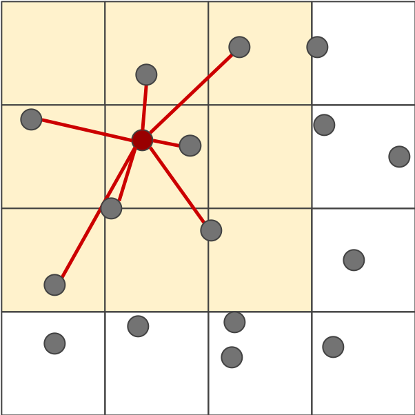

We created a real-time particle simulator that synchronizes to music.
We began our simulator as a modification of Rasterizer. The Sample Buffer data structure and associated transfer operations were causing severe performance problems (see our milestone video), so we removed the sample buffer and modified the pipeline to write directly to a frame buffer.
When the rendering function is called, particles are brought up to date to the time since the audio started playing.
Particles are rendered using the Bresenham algorithm. Each particle is treated as a circle, where in we divide the circle into eight sections and utilize the natural symmetry of circles to rasterize a line across each of the octants.
We begin with eight points centered at multiples of pi / 8, with a variable x, corresponding to the x axis, initialized to 0 and a variable y initialized to the particle radius.
By relying on a decision parameter d (which is initialized as 3 - (2 * radius)), we are able to increment our x and y values accordingly, and calculate the desired points on the circumference of the circle and rasterize a line vertically at those points (previously, we rendered a line from the center to the points, but this left some pixels within the circle not covered by the lines). This is done for each octant in the subsequent iterations of the algorithm. This process is repeated until y < x, which means we are out of the octant. We repeat this for all particles and with every change in their attributes., as they traverse the screen space.
A Python script loads the audio and uses SciPy to downsample the signal magnitude to the rate of the simulation- about 200Hz. The signal processing library LibROSA finds audio onsets (peaks) and beats (peaks that make up the dominant tempo of the song), and a binary vector that indicates the timestep of each onset or beat is recorded alongside the magnitude vector.
The simulator loads the data file, and uses the built-in macOS utility afplay to play the audio.
Particles have attributes such as position(x,y), velocity(vx,vy), acceleration(ax,ay), size, mass, and color.
Within every update loop, particle acceleration is updated based on gravity and a weak repulsive force between particles. Additionally, a distance-weighted sum of neighboring particle velocities is added to velocity.
A grid data structure is used to interact only nearby particles. If the interaction area is drawn to maintain a constant density, simulation runtime is linear with the number of particles. This is a standard optimization for simulations with many particles.
Particle velocity and position are updated according to a simple Euler update step.
As the particles traverse the screenspace, we are constantly checking for collisions between each particle and its surrounding. Collisions are represented by potential overlaps between the particles, as opposed to shared interactive points on the particles surfaces. If at any point the distance between the center of two particles is less than the sum of their radii, we know that a collision took place, and update the particle attributes accordingly. This is done by displacing the two particles by half of the overlaped distance in the direction of the vector created by the particle centers.
The particle velocities are then redirected, one going along the tangent vector to the collision and the other going along the normal while accouting for each of the particles mass. We do this by taking the distance between the two balls, and calculating the normalalized normal vector, as well as the tangent vector. We then find the tangential response by calculating the dot product between the velocity vector and the tangent vector of the collision, and use the values found to update the particles velocities respectively.
The onsets and beats from the audio are used to dynamically change the radius and color of each particle. At each onset, the radius is increased, then decays to the natural radius until the next onset (the constants are arbitrary, empirically they work well): radius = 3 * onset - 0.01(radius - natural_radius)
The particles change colors with the tempo of the audio signal input, randomly sampling from a various color subdomains according to a counter, so as to cycle through the color domains and induce the color changes seen. The chosen domains are purple, red, green, blue and gold. A domain is essentially a vector of Colors of a similar hue: once a domain is chosen, the sampled color for each particle is a random element of said domain.
Additionally, the color of a particle is set to a weighted average of the sampled color and a pure white color based on its current velocity. This means at low velocities, the particles will appear white, and at higher velocities, the sampled color will be brighter.
The magnitude of the audio signal is used to affect the strength of vertical gravity. For a magnitude m (ranges from 0 to 1), the y acceleration for all particles is set to 25*(10m - 2). The -2 "bias" term allows the direction of gravity to switch directions when m goes above (+y direction) or below (-y direction) a threshold of 0.20.
Braley, C. and Sandu, A. *Fluid Simulation For Computer Graphics: A Tutorial in Grid Based and Particle Based Methods*. 2010.
"Inside LiquidFun" https://docs.google.com/presentation/d/1fEAb4-lSyqxlVGNPog3G1LZ7UgtvxfRAwR0dwd19G4g/edit#slide=id.p
"Onset detection" https://librosa.github.io/librosa/onset.html
"Beat and tempo" https://librosa.github.io/librosa/beat.html
Brian worked on audio processing, particle simulation, and rasterization.
Yusuf worked on rasterization, particle interaction, and color visualizaiton.
Jayanth worked on rasterization.